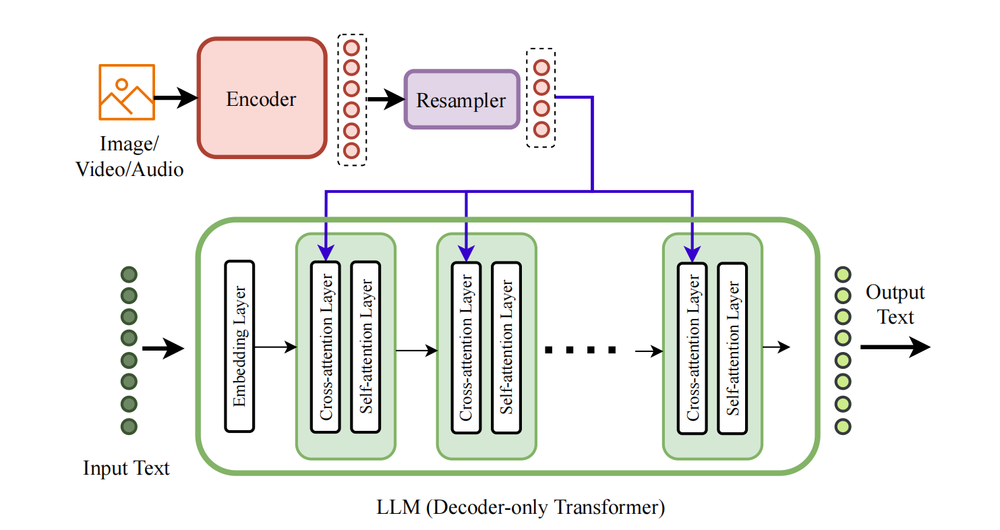
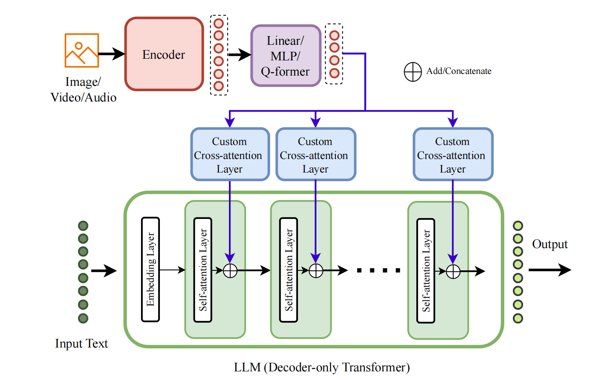
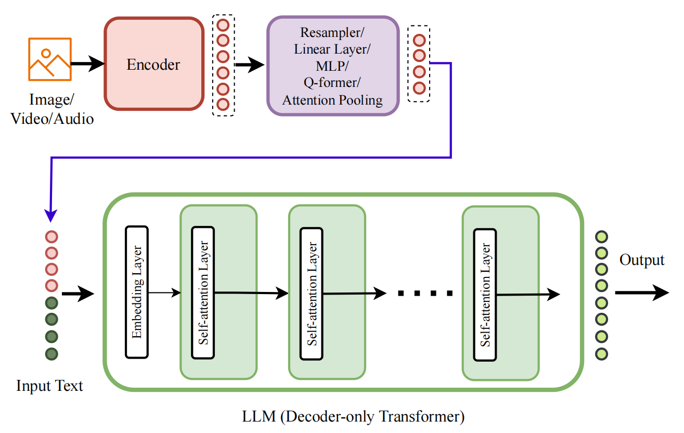
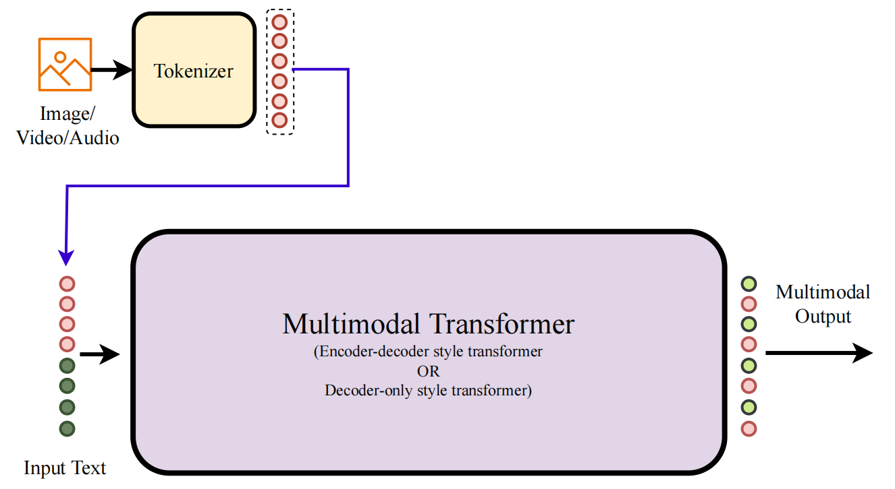

Paper Walkthroughs
The Evolution of Multimodal Model Architectures: A Taxonomy
This work uniquely identifies and characterizes four prevalent multimodal model architectural patterns in the contemporary multimodal landscape.
Introduction
The multimodal AI landscape has exploded in recent years, with models like GPT-4V, Gemini, and LLaVA demonstrating remarkable capabilities in understanding and generating content across vision, language, audio, and more. Yet beneath this diversity lies a fundamental question: how do we actually combine different modalities in a neural network?
A recent paper by Wadekar et al. (2024) provides the first systematic taxonomy of multimodal architectures, identifying four distinct architectural patterns that dominate the field. This taxonomy is more than academic—it reveals the core design decisions that determine a model's capabilities, training efficiency, and ability to scale to new modalities.
The key insight is surprisingly simple: multimodal architectures differ primarily in where and how they fuse information from different modalities. Some models perform "deep fusion" by integrating modalities within the internal layers of the network. Others perform "early fusion" by combining modalities at the input stage. Within these two broad categories, we find four specific types:
- Type-A (Standard Cross-Attention Deep Fusion): Uses standard cross-attention layers to deeply integrate modalities
- Type-B (Custom Layer Deep Fusion): Employs custom-designed layers for better deep fusion
- Type-C (Non-Tokenized Early Fusion): Fuses modalities at input without discrete tokenization
- Type-D (Tokenized Early Fusion): Tokenizes all modalities for unified input processing
Each architectural type represents different trade-offs between flexibility, efficiency, scalability, and the ability to generate multimodal outputs. Understanding these patterns is crucial for anyone building or working with multimodal systems—whether you're selecting a model for your application, designing a new architecture, or simply trying to understand why certain models behave the way they do.
Type-A: Standard Cross-Attention Deep Fusion
What it is: Type-A architectures take a pretrained Large Language Model (LLM) and inject standard cross-attention layers into its internal structure. These cross-attention layers act as "bridges" that allow the LLM to attend to encoded representations of other modalities (like images or audio) at multiple depths in the network.
Think of it like this: imagine you have a powerful language model that's great at text. To make it multimodal, you periodically interrupt its normal processing to let it "look at" image features. At layer 10, it might use cross-attention to inspect visual features before continuing with text processing. Then at layer 15, it does this again, building progressively richer multimodal representations.
Key characteristics
- Deep fusion: Modalities interact throughout the network depth, not just at input
- Modality-specific encoders: Images, audio, etc. are processed by dedicated encoders (e.g., Vision Transformer for images)
- Resampler modules: Convert variable-length modality sequences into fixed-length representations
- Standard architecture: Uses vanilla cross-attention without custom modifications
The cross-attention can be placed either before or after the self-attention layer in each transformer block, creating two subtypes:
- Subtype A.1: Cross-attention before self-attention (e.g., Flamingo, OpenFlamingo)
- Subtype A.2: Cross-attention after self-attention (e.g., VL-BART, VL-T5)
Representative models
The archetypal Type-A model is Flamingo (DeepMind, 2022), which pioneered the approach of interleaving cross-attention layers into a frozen LLM. Flamingo uses a Perceiver Resampler to compress variable-length image sequences into fixed-length visual tokens, then injects these via cross-attention layers placed before every self-attention layer in the LLM decoder.
Other notable Type-A models include:
- OpenFlamingo (2023): Open-source replication of Flamingo, trained on 60M interleaved image-text examples
- IDEFICS (2024): HuggingFace's open reproduction using LLaMA as the base LLM
- PaLI-X (2023): Google's 55B parameter model using ViT-22B vision encoder
- Otter (2023): Enhanced with instruction-following capabilities via the MIMIC-IT dataset
Trade-offs and considerations
Advantages:
- Fine-grained control over modality information flow at multiple network depths
- End-to-end trainable with standard transformer components
- Can leverage powerful pretrained LLMs directly
Disadvantages:
- Difficult to scale to additional modalities beyond the initially designed ones
- Cannot easily generate non-text outputs (limited to text generation)
When to use Type-A: This architecture shines when you need fine-grained multimodal understanding and have significant computational resources. It's particularly effective for tasks requiring deep reasoning across modalities, like visual question answering or detailed image captioning. However, the computational demands make it less suitable for resource-constrained scenarios or rapid prototyping.
Type-B: Custom Layer Deep Fusion
What it is: Type-B architectures are the "custom-engineered" cousins of Type-A. Like Type-A, they perform deep fusion by integrating modalities within the internal layers of the network. However, instead of using standard cross-attention, they employ specially designed layers optimized for multimodal fusion.
The key innovation is in the design of these fusion layers. For example, some Type-B models learn separate query/key/value projections for each modality, or introduce gating mechanisms that control how much each modality contributes at each layer. These custom designs can significantly improve efficiency and performance compared to vanilla cross-attention.
Key characteristics
- Deep fusion with custom layers: Modalities fuse within internal layers, but using specialized architectures
- Two subtypes based on layer design:
- Subtype B.1: Custom cross-attention layers with specialized Q/K/V mechanisms
- Subtype B.2: Other custom learnable layers (e.g., LoRA-based, Mixture-of-Experts)
- Efficiency optimizations: Custom designs often reduce parameters and compute vs. Type-A
- Gating mechanisms: Many use learnable gates to control modality contributions
Representative models
LLaMA-Adapter series introduced one of the first custom fusion mechanisms: learnable "adapter" prompts combined with a zero-initialized gating factor that gradually learns to incorporate visual information. The architecture adds only 1.2M parameters on top of LLaMA-7B.
CogVLM (2023) takes a different approach, learning separate Q/K/V embeddings for text and images in each decoder layer. It introduces a "visual expert module" that processes encoded image features before they enter custom cross-attention layers.
mPLUG-Owl2 (2023) uses a "Modality Adaptive Module"—a custom cross-attention where queries are shared across modalities but keys and values are modality-specific.
MM-Interleaved (2024) introduces MMFS (Multi-scale Multi-image Feature Synchronizer), enabling both image understanding and image generation by synchronizing features across modalities at multiple scales.
Other notable models:
- InternVL (2023): 6B parameter vision model with custom fusion for visual-linguistic tasks
- CogAgent (2023): Specialized for GUI understanding with 18B parameters
- MoE-LLaVA (2024): Uses Mixture-of-Experts layers in the FFN blocks (Subtype B.2)
- LION (2023): Combines LoRA adapters with MoE layers
Trade-offs and considerations
Advantages:
- More efficient than Type-A due to optimized custom layers
- Better control over modality fusion through specialized designs
- Easier to add new modalities via gating mechanisms
- Can achieve comparable or better performance with fewer parameters
- End-to-end trainable
Disadvantages:
- Requires architectural expertise to design effective custom layers
- Scalability still challenging, though better than Type-A
- Like Type-A, difficult to generate non-text outputs without additional components
When to use Type-B: Choose Type-B when you need the deep multimodal reasoning of Type-A but want better efficiency. It's particularly suitable when you're designing a model from scratch and can invest in custom layer development. The gating mechanisms make it more amenable to incremental addition of new modalities compared to Type-A.
Type-C: Non-Tokenized Early Fusion
What it is: Type-C represents a paradigm shift: instead of fusing modalities deep within the network, these architectures perform early fusion at the input stage. Modality-specific encoders process different inputs (images, audio, etc.), and their outputs are projected into the LLM's embedding space and concatenated with text tokens at the input.
Crucially, Type-C models do not use discrete tokenization for non-text modalities. Instead, they work directly with continuous embeddings from pretrained encoders. This makes them fundamentally modular—you can swap encoders and LLMs independently, connecting them with lightweight "projection layers."
Key characteristics
- Early fusion: All modalities combined at input, no fusion in internal layers
- Continuous embeddings: No discrete tokenization of images/audio/video
- Modular architecture: Encoder + Projection + LLM can be mixed and matched
- Minimal LLM modifications: Often no changes to LLM internal layers
- Four subtypes based on projection layer design:
- C.1: Simple Linear/MLP projection
- C.2: Q-Former + Linear/MLP
- C.3: Perceiver Resampler
- C.4: Custom learnable layers
Representative models
LLaVA (Liu et al., 2024) is perhaps the most influential Type-C model, demonstrating that a simple linear projection can effectively connect vision and language. It uses CLIP's visual encoder, a single linear layer for projection, and Vicuna LLM. Despite its simplicity, LLaVA achieves impressive results and has spawned numerous derivatives.
BLIP-2 (Li et al., 2023) introduced the Q-Former, a lightweight transformer that acts as an information bottleneck between frozen vision encoders and frozen LLMs. The Q-Former uses learnable queries to extract fixed-length representations from variable-length visual features, achieving remarkable efficiency—it trains the Q-Former (188M parameters) while keeping both the vision encoder (1.2B) and LLM (3B-11B) frozen.
MiniGPT-4 (2023) combines Q-Former with a linear projection layer, creating a two-stage training process: first aligning vision and language, then fine-tuning for instruction following.
Idefics2 (2024) uses a Perceiver Resampler to process visual features before feeding them to the LLM, achieving better vision-language alignment with improved efficiency over IDEFICS (Type-A).
The LLaVA family has grown to include:
- LLaVA-1.5 (2023): Enhanced with higher resolution and more training data
- LLaVA-Med (2024): Specialized for biomedical applications
- LLaVA-NeXT (2024): Improved reasoning and world knowledge
- LLaVA-Phi (2024): Uses smaller Phi-2 language model for efficiency
Other notable Type-C models include Qwen-VL, MM1 (Apple, 2024), mPLUG-Owl, Osprey, MobileVLM, and many more—Type-C is by far the most popular architecture type.
Trade-offs and considerations
Advantages:
- Simplicity: Easiest architecture to implement and understand
- Modularity: Can swap any encoder or LLM with minimal changes
- Scalability: Easy to add new modalities—just add encoder + projection layer
- Smallest parameter overhead: Projection layers add minimal parameters
Disadvantages:
- No fine-grained control of modality fusion within network
- Difficult to generate non-text outputs with standard auto-regressive training
- May have less nuanced multimodal reasoning than deep fusion approaches
When to use Type-C: This should be your default choice for most multimodal applications. Its simplicity, efficiency, and modularity make it ideal for prototyping, research, and production systems with limited computational budgets. Type-C models can be trained in hours on a single 8-GPU machine, making them accessible to academic researchers and small teams. The modular design also means you can easily upgrade components—swap in a better vision encoder or newer LLM—without retraining the entire model.
Type-D: Tokenized Early Fusion
What it is: Type-D architectures take early fusion one step further: they tokenize all modalities into discrete tokens before feeding them to the model. Just as text is tokenized into discrete word-pieces, images are tokenized into discrete visual tokens, audio into discrete audio tokens, and so on. This creates a unified representation space where the model can process and generate all modalities using the same auto-regressive objective.
The key insight is that tokenization enables multimodal generation. Because all modalities are discrete tokens, the model can be trained with standard next-token prediction to generate images, audio, and video—not just text. This is why Type-D is at the forefront of "any-to-any" multimodal models.
Key characteristics
- Tokenization of all modalities: Uses VQ-VAE, VQ-GAN, or similar to discretize inputs
- Unified token space: All modalities represented as discrete tokens
- Auto-regressive generation: Standard next-token prediction for all modalities
- Two subtypes based on core architecture:
- D.1: Decoder-only (LLM-style) transformer
- D.2: Encoder-decoder transformer
- Multimodal output capability: Can generate images, audio, video, not just text
Representative models
Unified-IO 2 (Lu et al., 2023) is a landmark Type-D model trained on an unprecedented scale of multimodal data: 1 billion image-text pairs, 1 trillion text tokens, 180M video clips, 130M interleaved image-text sequences, and more. It uses VQ-GAN style tokenizers for images and dense structures, and ViT-VQGAN for audio. The model is trained from scratch (7B parameters) using a Mixture of Denoisers objective.
4M (Mizrahi et al., 2024) takes a different tokenization approach: VQ-VAE for image-like modalities (RGB, depth, normals, semantic segmentation) and WordPiece for text. It uses a MultiMAE pretraining strategy with cross-modal prediction.
CM3Leon (Meta, 2023) is a decoder-only model (Subtype D.1) that tokenizes images using image-specific tokenizers and trains with standard next-token prediction. It was pretrained on 2 trillion tokens with 256-512 A100 GPUs.
LaVIT (2024) trains its own visual tokenizer as a first stage, then trains the main model to maximize likelihood of multimodal sequences using cross-entropy loss for both image and text tokens.
TEAL (2024) uses pretrained tokenizers for all modalities and a projection layer to align embeddings, achieving efficient any-to-any generation.
VL-GPT (2023) first trains a tokenizer to convert images to tokens, then trains the multimodal model on both image-text pairs and interleaved sequences.
Other Type-D models include SEED, Unicode, and the earlier Unified-IO.
Trade-offs and considerations
Advantages:
- Unified training: Single auto-regressive objective for all modalities
- Multimodal generation: Can generate images, audio, video, not just text
- Simplified architecture: All modalities processed uniformly as tokens
- Any-to-any capability: True multimodal input and output
Disadvantages:
- Training complexity: Must train or adapt tokenizers for each modality
- High computational cost: Comparable to or exceeding Type-A/B
- Large data requirements: Billions of samples needed for good performance
- Tokenization challenges: Not all modalities tokenize well, information loss
- Difficult to add new modalities: Requires training new tokenizers
- Large parameter count: Often larger than other types
When to use Type-D: Choose Type-D when you need multimodal generation capabilities—when your model must output images, audio, or video, not just text. This architecture is essential for any-to-any systems where users might input text and expect an image, or input an image and expect a video. However, be prepared for significant computational investment: Type-D models typically require hundreds of GPUs and weeks of training. They're currently the domain of well-resourced industry labs, though this may change as methods improve.
Type-D is also emerging as a key architecture for the next generation of general-purpose multimodal systems. While Type-C dominates current vision-language models, Type-D's unified tokenization approach may be the path to truly general multimodal intelligence.
Comparison and Practical Guidance
The taxonomy reveals a fundamental trade-off space:
Deep Fusion (Type-A, Type-B) offers fine-grained control and rich multimodal reasoning but at high computational cost. Early Fusion (Type-C, Type-D) is simpler and more efficient but with less nuanced interaction between modalities.
For most practitioners, Type-C is the practical choice: it's efficient, modular, and proven effective across a wide range of tasks. Start with LLaVA-style architecture unless you have specific reasons to choose otherwise.
Choose Type-A or Type-B when you need the deepest possible multimodal reasoning and have computational resources to match (dozens to hundreds of GPUs). Type-B is preferable if you can invest in custom layer design for better efficiency.
Choose Type-D when multimodal generation is essential—when text-only outputs aren't sufficient. Be prepared for significant engineering and computational investment.
The field is rapidly evolving. New architectures like VL-Mamba and Cobra are exploring State Space Models (SSMs) as alternatives to transformers, potentially offering better efficiency. But the four-type taxonomy provides a stable framework for understanding the design space, regardless of the underlying sequence model.
More contents are in the paper. Check it out at arxiv.org/abs/2311.03658!